Who is Nelson Mandela?
Nelson Rolihlahla Mandela was born on July 18, 1918 in Mvezo (Cape Province) and died on December 5, 2013 in Johannesburg (Gauteng), is a South African statesman. He was one of the historic leaders in the struggle against the institutional political system of racial segregation (apartheid) before becoming President of the Republic of South Africa from 1994 to 1999, following the first non-segregational national elections in the country's history.
Nelson Mandela Bay Metropolitan Municipality
Nelson Mandela Bay is one of eight metropolitan municipalities in South Africa. Located in Algoa Bay in the Eastern Cape Province, it includes the cities of Port Elizabeth, Uitenhage and Despatch.
In 2000, when the new municipalities were established, the
Port Elizabeth-Uitenhage-Despatch metropolitan area was unified
and renamed " Nelson Mandela Bay Metropolitan Municipality
" in honour of the former South African President.
The municipality has a population of 970,104 (in 2011).
Port Elizabeth
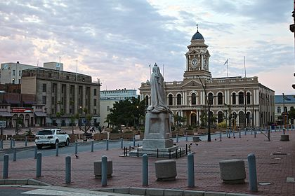 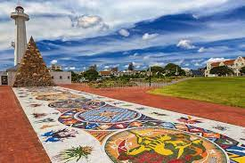
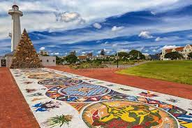
Port Elizabeth is located in the Eastern Cape Province. Stretching nearly 16 kilometers along the Algoa Bay, it is named after the wife of the Governor of Cape Town, Rufane Donkin, founder of the city in 1820. More colloquially known by its initials of P.E., it is also nicknamed "friendly city" in English.
Stadium
The Nelson Mandela Bay Stadium or Nelson Mandela Bay Stadium is a stadium located in Port Elizabeth, South Africa in the Nelson Mandela metropolis.Devoted mainly to soccer, it can also be used for rugby. It is located two kilometers from the Indian Ocean coast. It hosted the 2010 FIFA World Cup matches and the African Cup of Nations Football in 2013. It is home to the Chippa United soccer club and the Southern Kings rugby team. The Nelson Mandela Bay Stadium has a capacity of 48,459 and features 45 luxury suites.
Every 2 years the coloured race is held, which consists of a race where paint and pigments are thrown on all participants.
Kragga kamma game park
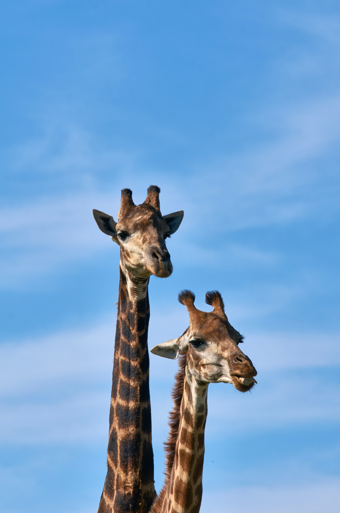 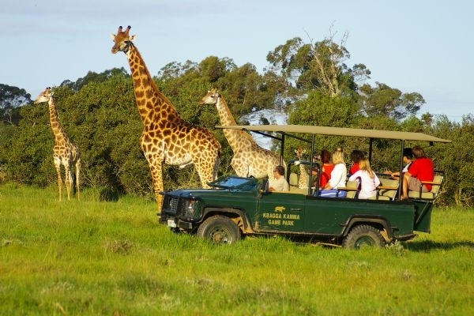
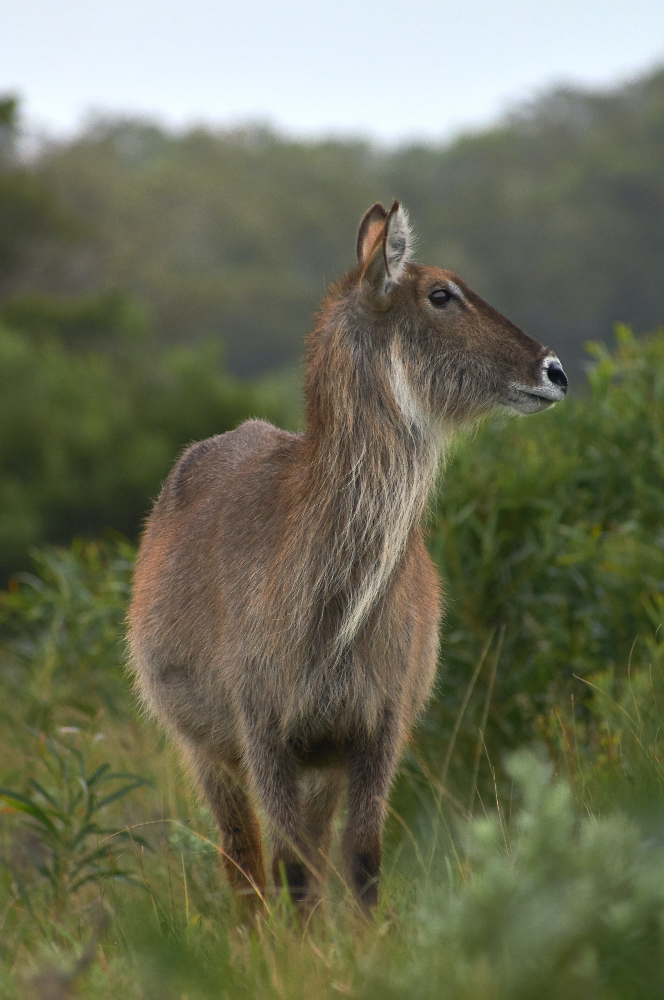
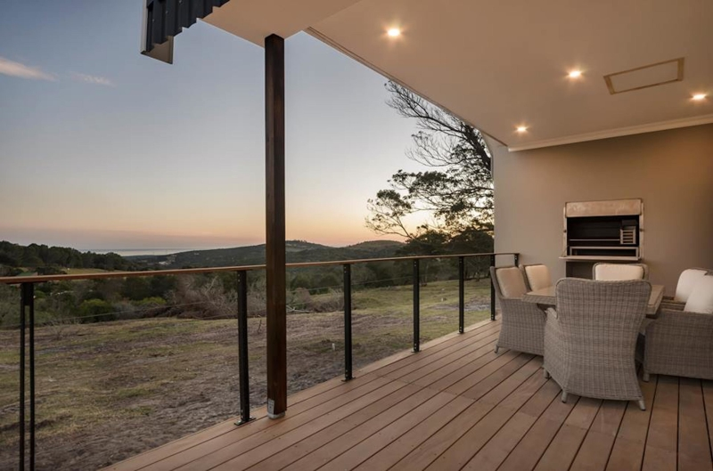
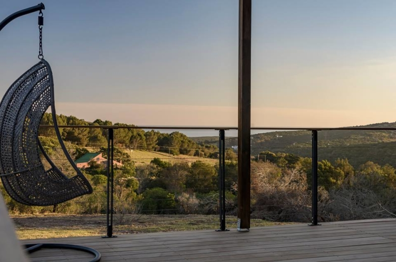
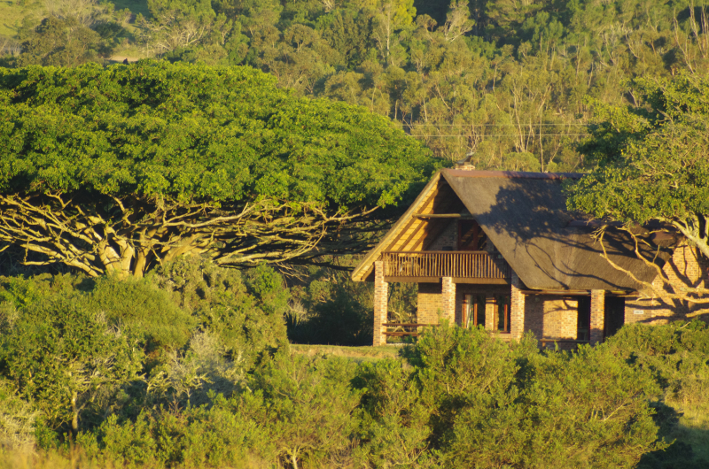
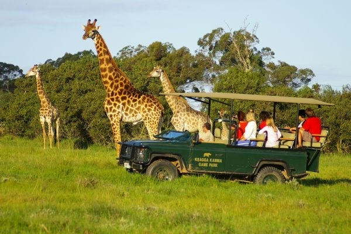
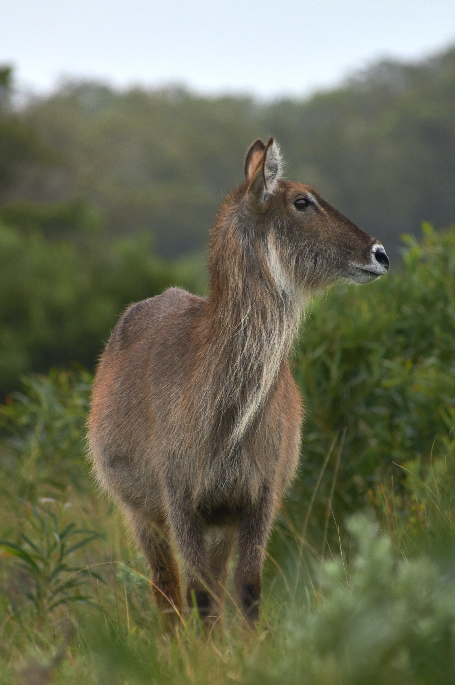
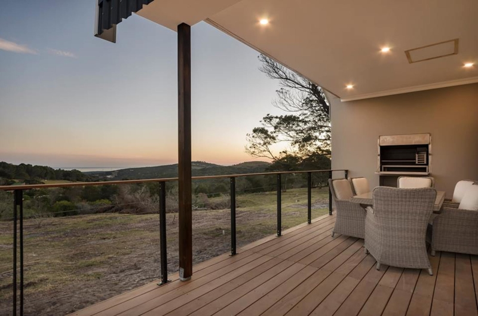
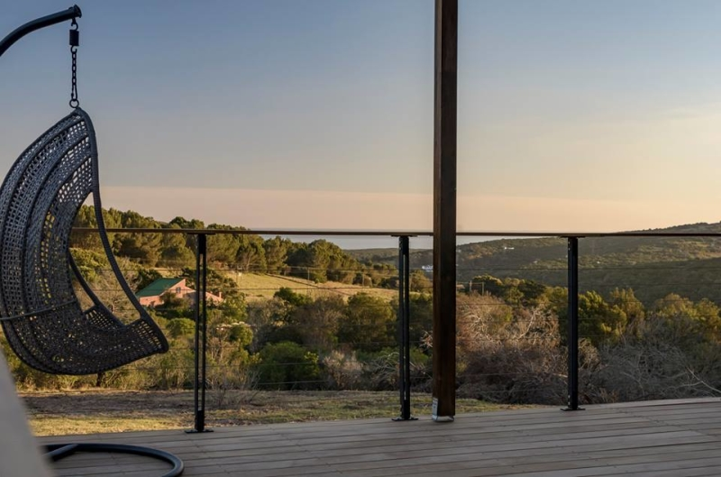
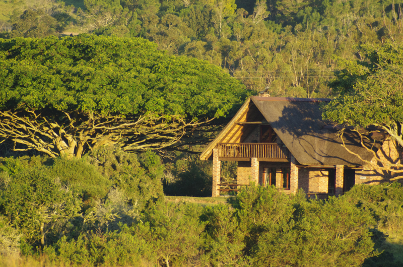
The lush coastal forest and grasslands are home to vast herds of African game including white rhino, buffalo, cheetah, giraffe, zebra, nyala, bontebok, lechwe and many other species. All these animals roam freely, without restriction, in a natural environment. This owner-managed park, where hunting and other disturbances of game are prohibited, offers you close-up views of the animals.
Drive through the park in your own vehicle on well-maintained roads (no need for 4x4s) and enjoy the comfort of your car to observe wildlife in all weather conditions.
For really close encounters, choose the 2-hour guided tour in an open Landrover with a professional guide who will provide you with interesting information about the animals and the historical background of the area.
Open every day during the year, excluding Christmas day.
Gates open daily at 8:00 am and close for entry at 5:00 pm. In summer the gates are locked at 7:00 pm and at 6:00 pm in winter.
Uitenhage
Uitenhage (also called Kariega) is a city in the Eastern Cape Province of South Africa, part of the Nelson Mandela Metropolis organized around the city of Port Elizabeth. It is located 30 km northwest of Port Elizabeth.
Chumani Ebikes
Our bikes are equipped with pedal assistance and an acceleration mode. They have a range of 30 to 70 km depending on how much pedaling you are willing to do. They allow a less fit cyclist to reach distances and conquer hills that he or she would normally be able to cover, but at the same time, they allow the experienced cyclist to push himself or herself to the limit.
Golf Club
Nicknamed the "garden city" because of its position at the foot of the
Winterhoek mountains, the Uitenhage golf course offers an 18-hole challenge
to passionate golfers.
This picturesque course was created in 1891 by its members and, in the
opinion of all, offers a real challenge on its course, especially when the
wind is blowing.
We are committed to supporting sustainable and environmentally friendly tourism. Our electric bike rental is a testament to our philosophy: we believe that technology can be used in a way that benefits us without destroying our planet.